アイデアを作って、遊んで、直す。
動かすのはロボットじゃない。「見る向き」だけ。
今回の試作は距離センサーの角度調整だけを実装しています。
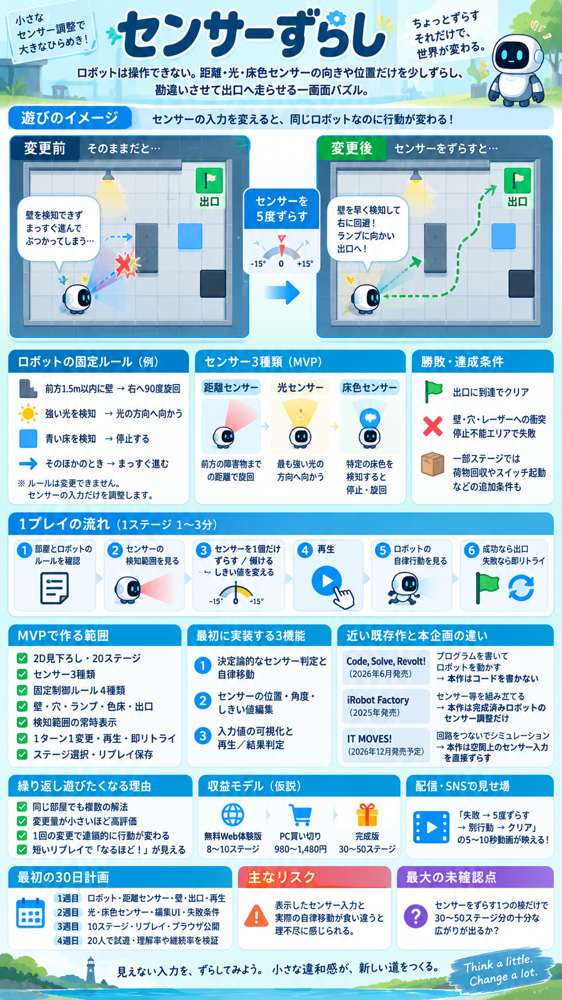
4歩前の自分にスイッチを任せて、扉の向こうへ。
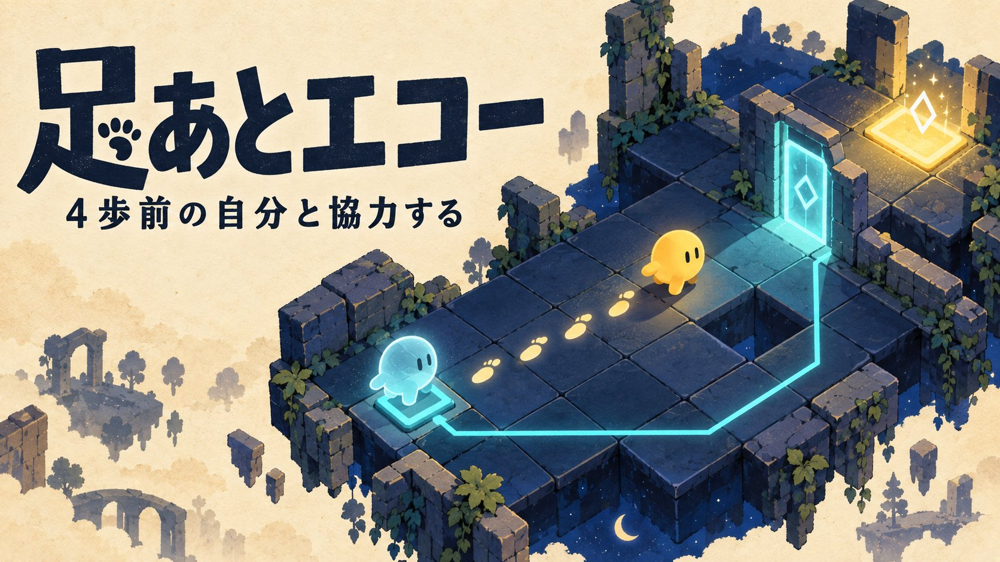
助けるほど長くなる船団。最後尾まで見て、港へ連れ帰ろう。
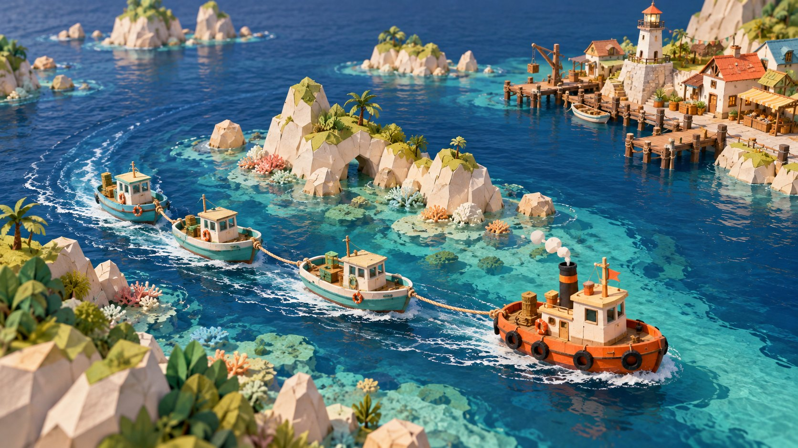
６枠の仕入れかご。売り切るか、夜更けの客を待つか。
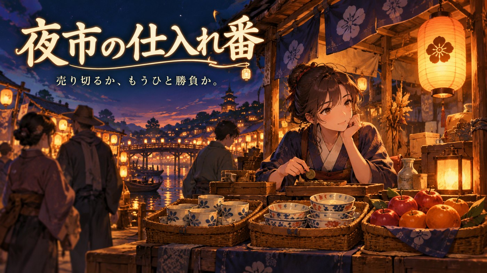
2人の隊員に指示。目の前の消火か、まだ燃えていない森への先回りか。
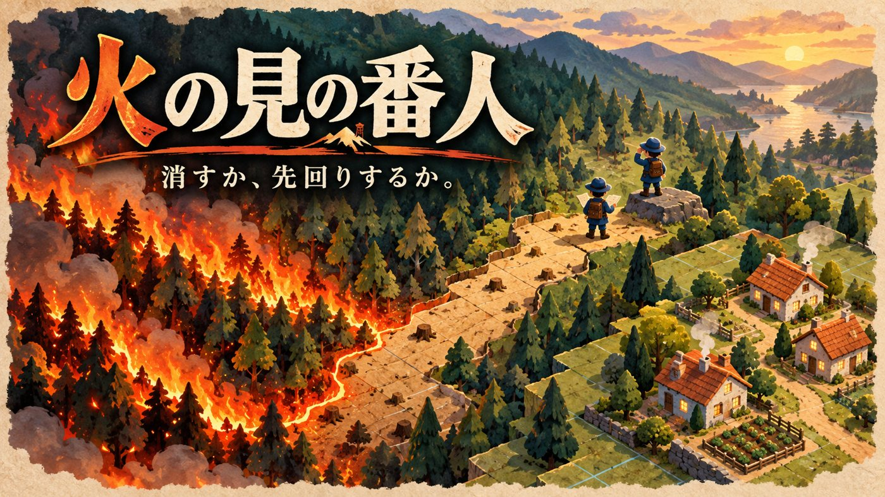
急ぎたい。でも、起こしたくない。眠る巨人の様子を読んで3軒へ。
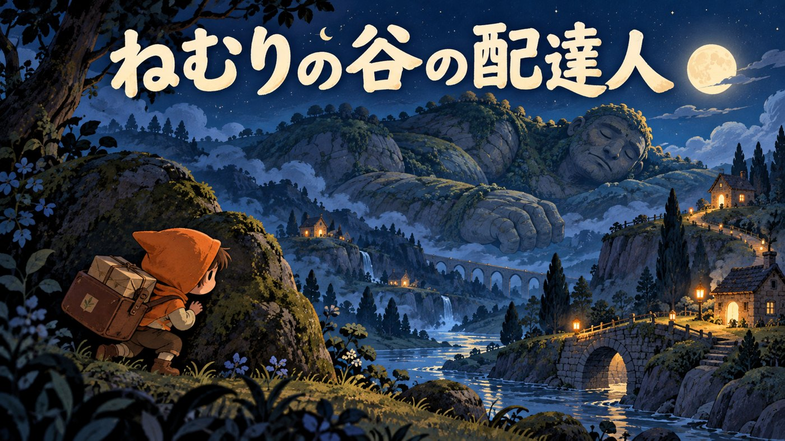
4枚のお皿、演者はひとり。次に助けるお皿を選ぼう。
速く掘る？ そっと払う？ 化石の続きと安全な砂を見分けよう。
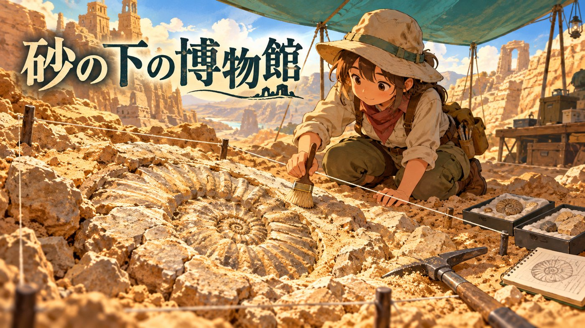
受けた一撃を、反撃の力に。盾と気力の使いどころを読もう。
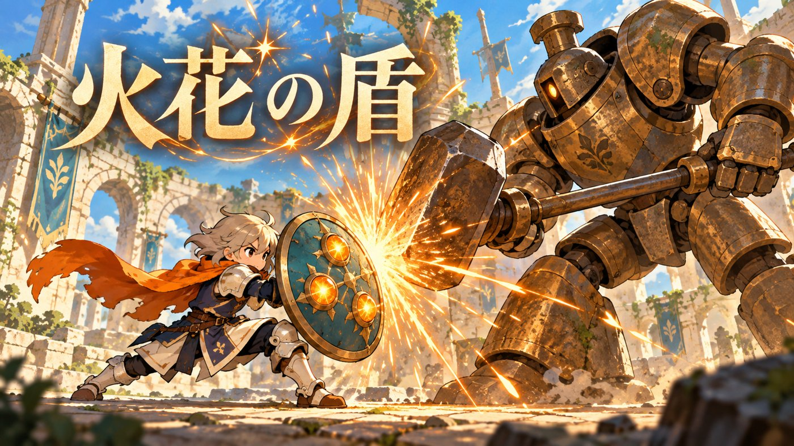
一人の証言が、別の人の持ち物も教えてくれる。
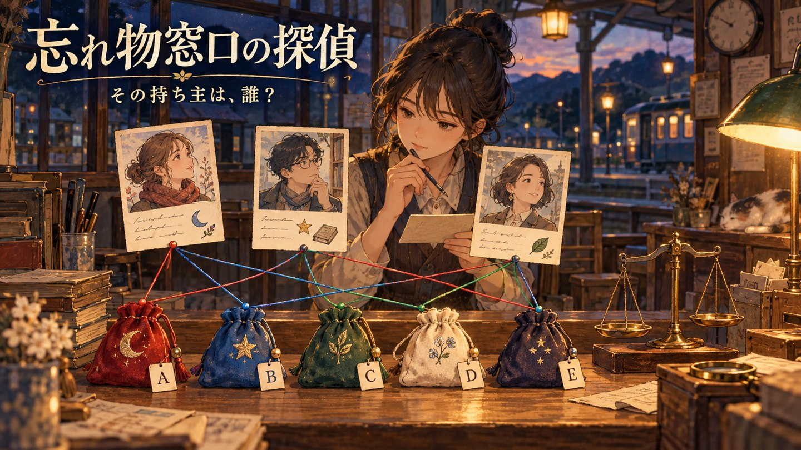
羽ばたくか、風で休むか。高度と体力を使って島へ。
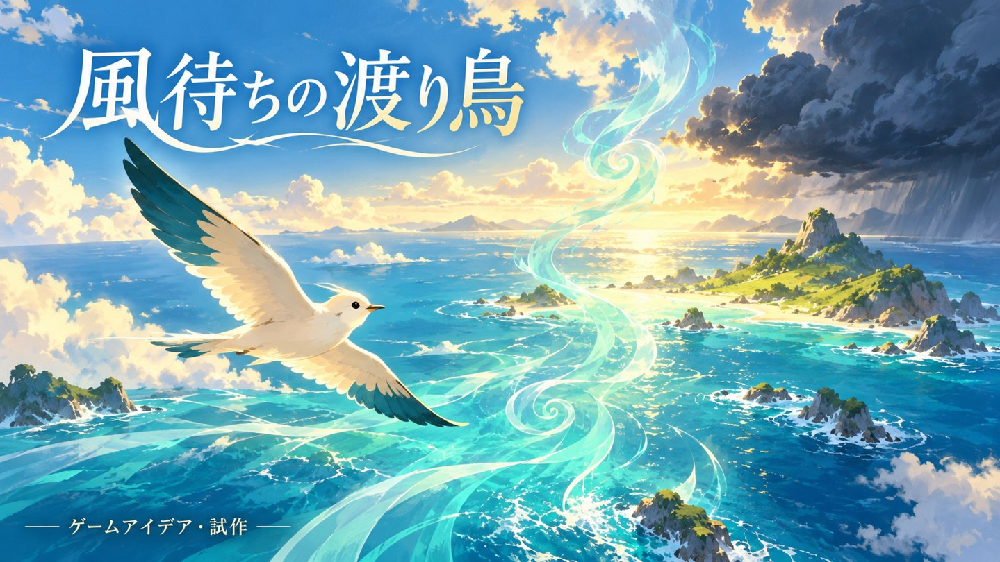
いま出す？ もう少し待つ？ 行先と交差点の空きを読んで12便を送り出そう。
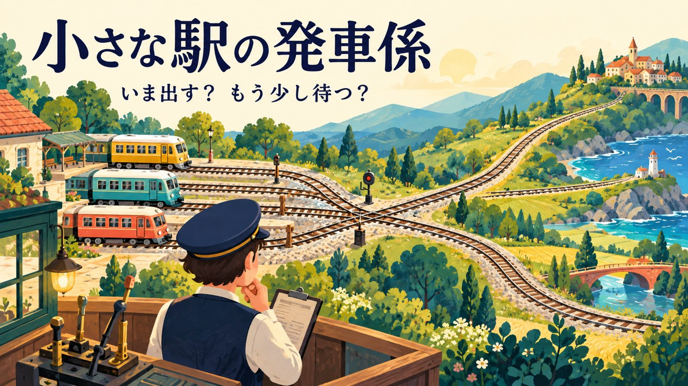
ひと押しで、となりの形も変わる。注文の輪郭へ土を整えよう。
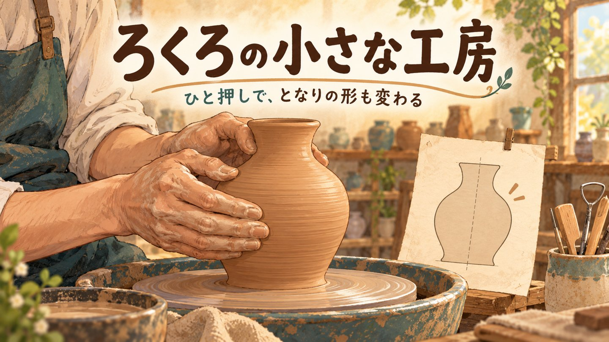
見て、覚えて、ドンと返す。叩く瞬間と待つ間を楽しむ小さな試作。
道の地図と水筒、麻布とパン、灯油瓶と毛布。返事を聞き、数量を譲って双方が納得する条件を探そう。
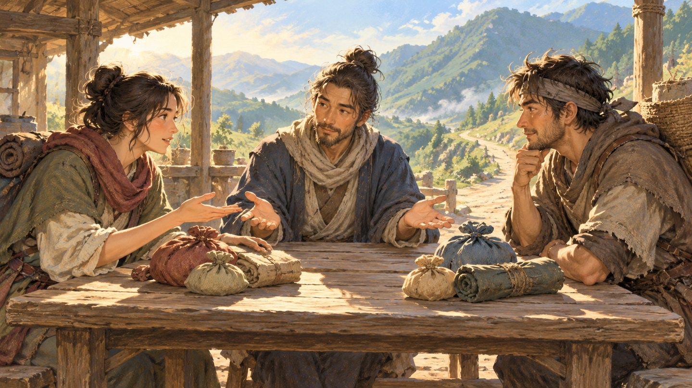
今日の工房が、明日のパンをつくる。7日間の小さな生産づくり。
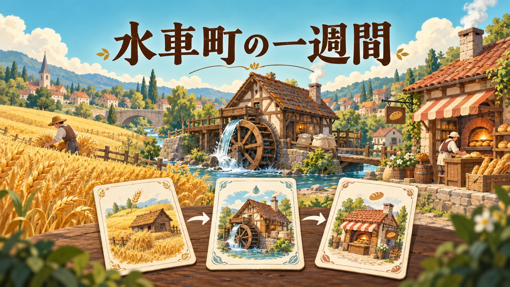